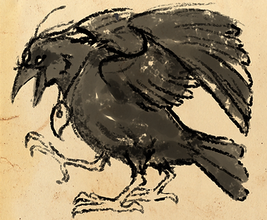
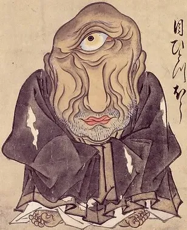
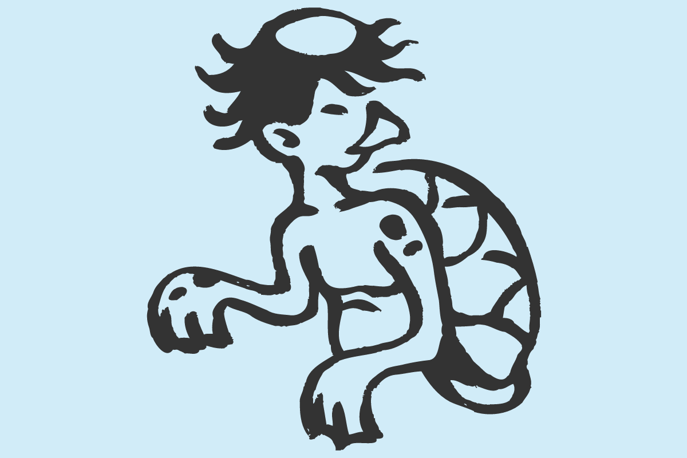
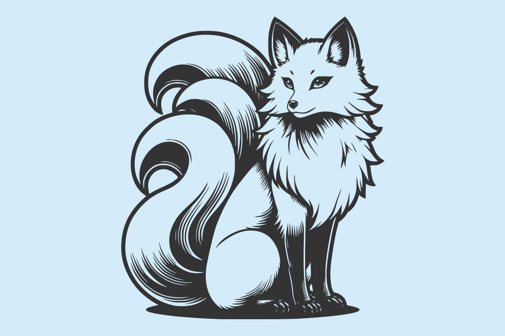

Na mitologia japonesa, esta criatura voadora de três pernas trata-se de um corvo selvagem chamado Yatagarasu (八咫乌). O aparecimento deste grande pássaro é interpretada como prova da vontade do Céu ou intervenção divina nos assuntos humanos. Dizem que ele guiou o caminho para o imperador Jimmu.
Aobozou (青坊主) é também conhecido como Me-hitotsu-bo, é um monge verde que dizem pegar crianças que passam próximos aos campos verdejantes de arroz. O fato de ter essa aparência monstruosa e um olho só é a punição por ter cometido muitas atrocidades mesmo sendo um monge. O kanji de AO, significa azul, mas também pode significar imaturo, tendo relação ao fato deste monge ter se “desviado” do seu caminho sagrado.
Karakasa-obake (唐傘) pode ser traduzido como “guarda-chuva chinês”. Também é chamado de Kasa-obake e faz parte da categoria “tsukumogami”, ou seja, espíritos malignos ou travessos que dão vida à objetos quando estes completam 100 anos.

Rokurokubi (ろくろ首) é um youkai que durante o dia tem aparência humana, mas durante a noite, ganha a habilidade de esticar o pescoço, alcançando uma grande altura. São capazes de sugar a energia das pessoas enquanto dormem e de mudar a face para uma face de oni para espantar os mortais mais facilmente.

O Kappa é uma criatura aquática com aparência humanoide, conhecido por seu prato de água na cabeça que é a fonte de seu poder, e o casco de tartaruga nas suas costas. São considerados como o próprio espírito das águas, que habita os rios e lagos. É famoso por suas travessuras, além de serem exímios nadadores e lutadores de sumô. Diz-se que o Kappa é obcecado por cortesia, e são yokais com muita honra.
Kitsune são raposas sobrenaturais que possuem a habilidade de se transformar em humanos, frequentemente em belas mulheres. Associados ao deus xintoísta Inari, os Kitsune são tanto benévolos quanto maliciosos, dependendo da história. Mas são sempre belas e astutas. Dentre esses yokais japoneses, as raposas de nove caudas, as “kyuubi”, são as mais famosas.
